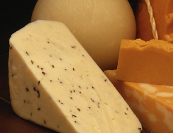

We have traveled the world to bring you an extensive collection of domestic and imported wines and spirits.
Whether you want to mix the quintessential martini or find the perfect wine to serve at your next dinner party, Kudler's is the place to shop. You will find that our stores carry a wide variety of spirits and at prices that will meet any budget.
While we are proud of our wide selection, we certainly don’t want our customers to be intimidated, so each of our stores has a Wine Steward who will be more than happy to assist you in making your selection. We also hold monthly wine appreciation classes so you can learn the nuances of our wines.